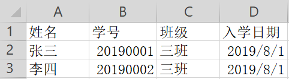

经过一番搜索发现，java操纵excel文件常用的有jxl和poi两种方式，孰好孰坏看自己需求而定。
其中最主要的区别在于jxl不支持.xlsx，而poi支持.xlsx
这里介绍的使用poi方式(XSSFWorkbook)，实际上poi提供了HSSFWorkbook和XSSFWorkbook两个实现类。区别在于HSSFWorkbook是针对.xls文件，XSSFWorkbook是针对.xslx文件。
先创建一个工作簿，一个工作簿可以有多个工作表，一个工作表可以有多个行，一个行可以有多个单元格
工作簿 ----------->XSSFWorkbook
工作表 ----------->XSSFSheet
行 ----------->XSSFRow
单元格 ----------->XSSFCell

<!--poi-->
<dependency>
<groupId>org.apache.poi</groupId>
<artifactId>poi</artifactId>
<version>4.1.0</version>
</dependency>
<dependency>
<groupId>org.apache.poi</groupId>
<artifactId>poi-ooxml</artifactId>
<version>4.1.0</version>
</dependency> 1 package com.zjk.testexcel;
2
3 import org.apache.poi.xssf.usermodel.*;
4 import java.io.FileInputStream;
5 import java.io.IOException;
6
7 /**
8 * @Auther: zjk
9 * @Date: 2019/8/30
10 * @Description:
11 */
12 public class TestExcel1 {
13 public static void main(String[] args) {
14 try {
15 //创建工作簿
16 XSSFWorkbook xssfWorkbook = new XSSFWorkbook(new FileInputStream("D:\\test-excel\\student.xlsx"));
17 System.out.println("xssfWorkbook对象：" + xssfWorkbook);
18 //读取第一个工作表(这里的下标与list一样的，从0开始取，之后的也是如此)
19 XSSFSheet sheet = xssfWorkbook.getSheetAt(0);
20 System.out.println("sheet对象：" + sheet);
21 //获取第一行的数据
22 XSSFRow row = sheet.getRow(0);
23 System.out.println("row对象：" + row);
24 //获取该行第一个单元格的数据
25 XSSFCell cell0 = row.getCell(0);
26 System.out.println("cello对象：" + cell0);
27 } catch (IOException e) {
28 e.printStackTrace();
29 }
30 }
31 }xssfWorkbook对象：
Name: /xl/workbook.xml - Content Type: application/vnd.openxmlformats-officedocument.spreadsheetml.sheet.main+xml
sheet对象：
Name: /xl/worksheets/sheet1.xml - Content Type: application/vnd.openxmlformats-officedocument.spreadsheetml.worksheet+xml
row对象：
<xml-fragment r="1" spans="1:4" xmlns:r="http://schemas.openxmlformats.org/officeDocument/2006/relationships" xmlns:xdr="http://schemas.openxmlformats.org/drawingml/2006/spreadsheetDrawing" xmlns:x14="http://schemas.microsoft.com/office/spreadsheetml/2009/9/main" xmlns:mc="http://schemas.openxmlformats.org/markup-compatibility/2006" xmlns:etc="http://www.wps.cn/officeDocument/2017/etCustomData" xmlns:main="http://schemas.openxmlformats.org/spreadsheetml/2006/main">
<main:c r="A1" t="s">
<main:v>0</main:v>
</main:c>
<main:c r="B1" t="s">
<main:v>1</main:v>
</main:c>
<main:c r="C1" t="s">
<main:v>2</main:v>
</main:c>
<main:c r="D1" t="s">
<main:v>3</main:v>
</main:c>
</xml-fragment>
cello对象：姓名package com.zjk.testexcel;
import org.apache.poi.xssf.usermodel.XSSFCell;
import org.apache.poi.xssf.usermodel.XSSFRow;
import org.apache.poi.xssf.usermodel.XSSFSheet;
import org.apache.poi.xssf.usermodel.XSSFWorkbook;
import java.io.FileInputStream;
import java.io.IOException;
/**
* @Auther: zjk
* @Date: 2019/8/30
* @Description:
*/
public class TestExcel2 {
public static void main(String[] args) {
try {
//创建工作簿
XSSFWorkbook xssfWorkbook = new XSSFWorkbook(new FileInputStream("D:\\test-excel\\student.xlsx"));
System.out.println("xssfWorkbook对象：" + xssfWorkbook);
//读取第一个工作表
XSSFSheet sheet = xssfWorkbook.getSheetAt(0);
System.out.println("sheet对象：" + sheet);
//获取最后一行的num，即总行数。此处从0开始计数
int maxRow = sheet.getLastRowNum();
System.out.println("总行数为：" + maxRow);
for (int row = 0; row <= maxRow; row++) {
//获取最后单元格num，即总单元格数 ***注意：此处从1开始计数***
int maxRol = sheet.getRow(row).getLastCellNum();
System.out.println("--------第" + row + "行的数据如下--------");
for (int rol = 0; rol < maxRol; rol++){
System.out.print(sheet.getRow(row).getCell(rol) + " ");
}
System.out.println();
}
} catch (IOException e) {
e.printStackTrace();
}
}
}xssfWorkbook对象：Name: /xl/workbook.xml - Content Type: application/vnd.openxmlformats-officedocument.spreadsheetml.sheet.main+xml
sheet对象：Name: /xl/worksheets/sheet1.xml - Content Type: application/vnd.openxmlformats-officedocument.spreadsheetml.worksheet+xml
总行数为：2
--------第0行的数据如下--------
姓名 学号 班级 入学日期
--------第1行的数据如下--------
张三 2.0190001E7 三班 01-八月-2019
--------第2行的数据如下--------
李四 2.0190002E7 三班 01-八月-2019 注意：2.0190001E7 = 2.0190001 * 107 = 20190001